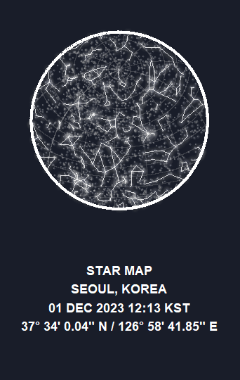

Simple feature collection with 5 features and 1 field
Geometry type: MULTIPOLYGON
Dimension: XY
Bounding box: xmin: -179.987 ymin: -74.9 xmax: 180 ymax: 66.946
Geodetic CRS: WGS 84
id geometry
1 ol1 MULTIPOLYGON (((178.558 -74...
2 ol2 MULTIPOLYGON (((-176.662 -6...
3 ol3 MULTIPOLYGON (((-174.067 -6...
4 ol4 MULTIPOLYGON (((-158.721 -6...
5 ol5 MULTIPOLYGON (((161.333 -59...Constellation Maps
INFO 526 - Fall 2023 - Project Final
Background
High-level Goal
Develop a Shiny app that generates constellation maps that utilizes interactive elements, incorporating computational and visualization techniques.

Goals & Motivations
Increasing engagement by personalizing the experience through various elements: color usage, map location, time zone, latitude/longitude location
Designing with a user-friendly interface to ensure accessibility for people of all backgrounds and levels of astronomical knowledge
Providing annotations to provide readability and educational context for a wide range of users, including astronomy beginners
Dataset
This dataset is a processed version of d3-celestial-plugin, an official GeoJSON library for obtaining spatial data on constellation objects.
The datasets are available in GeoJSON (
*.geojson) and GeoPackage (*.gpkg) formatsRepresentation of these celestial objects’ positions are according to the J2000 epoch. Which means that it is as of the Julian epoch that started on January 1, 2000, at 12:00 Terrestrial Time.
Data used:
mw= Milky Way datasetconstellations.lines= Constellation Lines datasetstars.8= Stars dataset
Execution
Analysis Approach
- Develop a Shiny app for personalized constellation maps with user input
- Enhance user engagement in stargazing from various locations time zones and even user bases
- Prioritize accessibility through a user-friendly interface and colorblind-friendly design
- Provide contextual annotations for users with different levels of astronomical knowledge
Helper Functions
We first started by exploring the dataset objects and creating transformation functions for the data.
For getting the celestial map of any geolocation, there were two requirements.
- First to get the time zone mapped to the local time zone of the desired place. This was done by getting projections through the
get_mst()function where we convert the time and then derive the rotation of the objects in the dataset with the given date and time
- Second, using the derived projections, we needed to map the objects in a spherical geom. This was done using the
sfpackage.
Plotting Functions
- Every dataset for this project (milkyway, stars, constellations) contained sf (simple features) object that can be used directly to plot polygons on a spherical geom (s2). Here is a glimpse of one such dataset:
Plotting Functions
- Using the three datasets, we we able to create location based spherical maps for any given time. The plots are shown below


Results
Knitting them together
- We plotted all the functions together, and customized the background color, the glow intensity of the constellations, and provided a pretty caption at the footer
#| code-fold: true
#| code-summary: "Plot Function for Star Map"
ggplot() +
# Graticules
geom_sf(data = grat_end, color = "grey60", linewidth = 0.25, alpha = 0.3) +
# A blurry Milky Way
with_blur(
geom_sf(
data = mw_end, aes(fill = fill), alpha = 0.1, color = NA,
show.legend = FALSE
),
sigma = 8
) +
scale_fill_identity() +
# Glowing stars
geom_glowpoint(
data = stars_end, aes(
alpha = br, size =
br, geometry = geometry
),
color = "white", show.legend = FALSE, stat = "sf_coordinates"
) +
scale_size_continuous(range = c(0.05, 0.75)) +
scale_alpha_continuous(range = c(0.1, 0.5)) +
# Glowing constellations
geom_glowpath(
data = const_end_lines, aes(X, Y, group = interaction(L1, L2)),
color = "white", size = 0.5, alpha =0.8, shadowsize = 0.4, shadowalpha = 0.01,
shadowcolor = "white", linejoin = "round", lineend = "round"
) +
# Border of the sphere
geom_sf(data = hemisphere_sf, fill = NA, color = "white", linewidth = 1.25) +
# Caption
labs(caption = caption) +
# And end with theming
theme_void() +
theme(
text = element_text(colour = "white"),
panel.border = element_blank(),
plot.background = element_rect(fill = "#191d29", color = "#191d29"),
plot.margin = margin(20, 20, 20, 20),
plot.caption = element_text(
hjust = 0.5, face = "bold",
size = rel(1),
lineheight = rel(1.2),
margin = margin(t = 40, b = 20)
)
)
Demo
Now, we are going to demonstrate our project in action.
Conclusion
- Constellations aid in locating stars, galaxies, and other celestial bodies, offering reference points for astronomical observation and research.
- Observations of constellations contribute to scientific discoveries, aiding in the understanding of star formation, stellar evolution, and the dynamics of galaxies.
- Constellations serve as educational tools, engaging learners of all ages in the study of astronomy and offer an accessible entry point for teaching basic astronomical concepts.
Limitations
Some starmap apps can become complex due to the abundance use of features, making the interface crowded, confusing the new users.
Sometimes due to incomplete or inaccurate data, might lead to misidentification of celestial objects or missing information about certain stars or constellations. The dataset is currently actively updated, but with the passing of time, the requirement for different processed dataset can arise.
Thank you for listening! Any questions?